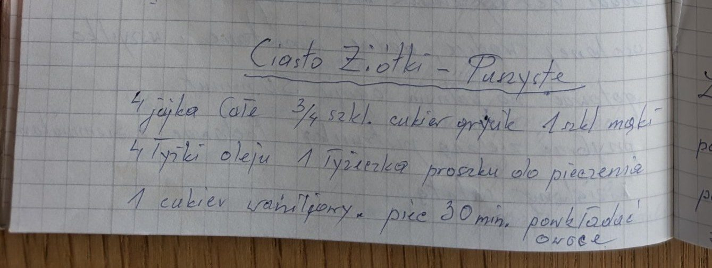

Ciasto puszyste


Składniki
- 4 całe jajka
- 3/4 szkl. cukru grysik
- 1 szkl. mąki
- 4 łyżki oleju
- 1 łyżeczka proszku do pieczenia
- 1 cukier waniliowy
- owoce
Przygotowanie
- Wszystkie składniki wymieszać.
- Piec 30 minut.
- Przekładać owocami.
Oryginalny zapis
Ciasto Żółtki – Puszyste
4 jajka całe 3/4 szkl. cukier grysik 1 szkl mąki
4 łyżki oleju 1 łyżeczka proszku do pieczenia
1 cukier waniliowy. piec 30 min. przekładać
owoce